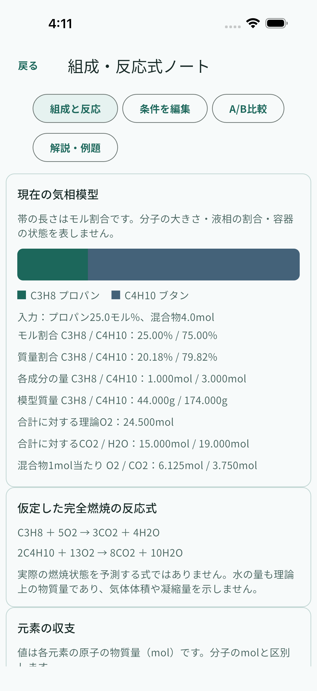
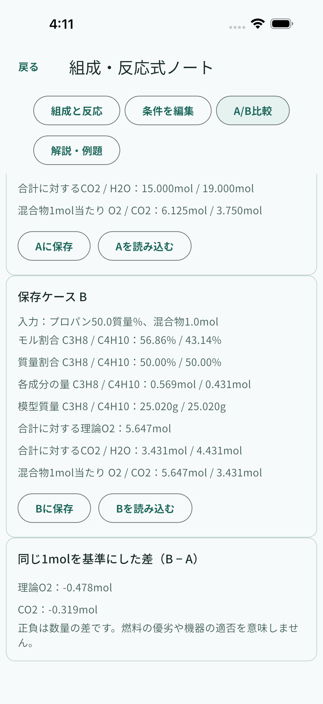

LPG / JAPANESE STUDY
同じ50%でも、
同じ組成とは
限らない。
LPGの選択基礎を学ぶ、日本語の独立学習アプリ。モル割合と質量割合を区別し、反応式の係数を読み直す組成ノートを準備しています。
公開準備中
アプリの画面・問題・解説は日本語です。英語はこのウェブ案内の翻訳です。
組成の違いを読む新しい組成ノートはiPhone・iPadシミュレーターで計算、独立したA/B保存と再起動後の保持を確認しました。実機と通知の確認は継続中で、公開済み機能として案内していません。
検証したアプリの画面
iPhone・iPadシミュレーターの実際の検証画面です。画面・問題・解説は日本語。学習記録は検証用の例で、公開・審査承認を意味しません。




ウェブ概念例 — アプリ画面ではありません
- プロパンのモル割合
- —
- 混合物の合計量
- —
- 理論式のO2量
- —
- 混合物1mol当たりのO2
- —
- 式のCO2量
- —
- 式のH2O量
- —
44g/mol・58g/molの教育用近似値を使います。数値は実設備の空気供給量や安全設定ではありません。入力・選択は送信・保存しません。
端末に置いて、基礎を読み直す。
収録する独自練習500問、解説、概念、復習と学習記録を端末で使う、有料ダウンロード型の学習アプリを準備しています。購入・導入・更新と外部リンクには通信が必要です。新ノートの端末検証は継続中です。
仮想2成分の学習模型
気液平衡、実容器、空気設定、過剰空気、流量、熱、CO・排出、換気、施工、法令適合、公式採点は扱いません。試験全範囲の網羅や合格を保証しません。
RushLabsの独立学習資料です。政府・高圧ガス保安協会（KHK）との提携、承認、公式問題の提供を意味しません。